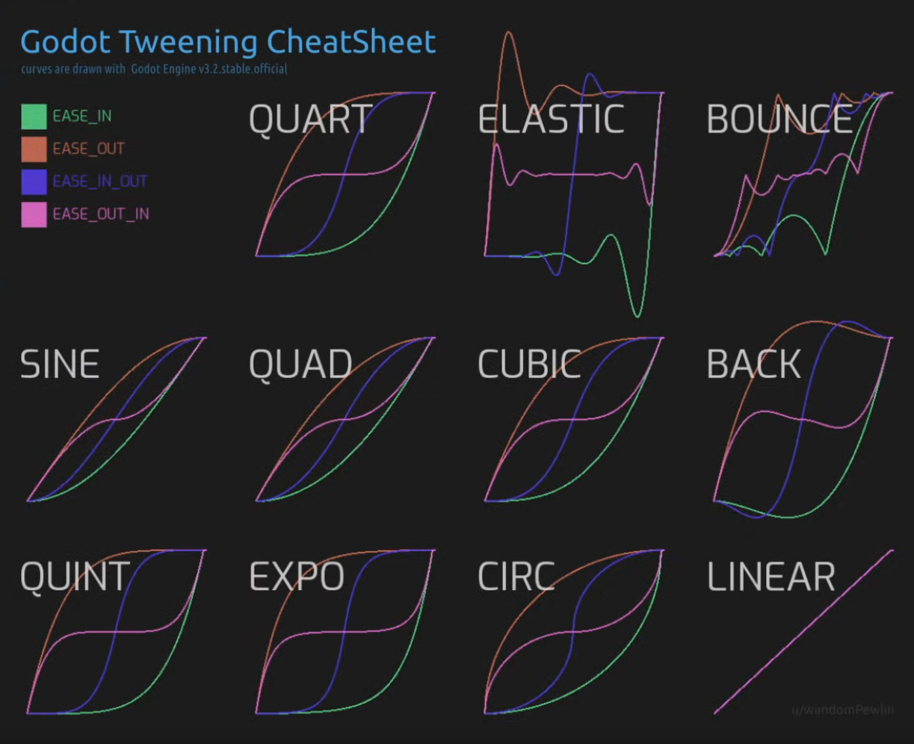

Common Techniques
Interpolation, Blending
Interpolation
-
Casey - Linear Blend, General Blend Equation, Blend for Mesh Skinning .
-
Barycentric Coordinates :
-
Used to interpolate values from within a triangle.
-
 .
.
-
For a point to be inside the triangle, this needs to be true:
-
0 < alpha < 1 -
0 < beta < 1 -
0 < gamma < 1
-
-
Easing / Tweening :
-
 .
Blend Modes
Pre-multiplied Alpha
-
Normally, a color with alpha is stored as:
RGBA = (R, G, B, A)
-
In premultiplied alpha, the RGB channels are already multiplied by alpha:
RGBA_premultiplied = (R*A, G*A, B*A, A)
-
This changes how blending calculations behave because the transparency is “baked into” the color channels.
-
Pre-multiplying the alpha in a frag shader :
vec4 color = texture(sampler, uv); color.rgb *= color.a; -
In Vulkan :
-
Vulkan does not automatically premultiply alpha for you.
-
Vulkan itself only handles blending according to the factors you specify in the pipeline, after the fragment shader.
-
Vulkan blending formula:
finalColor = srcColor * srcFactor + dstColor * dstFactor -
For premultiplied alpha, typical blending factors are:
srcColor = ONE dstColor = ONE_MINUS_SRC_ALPHA -
Without premultiplied alpha (standard alpha):
srcColor = SRC_ALPHA dstColor = ONE_MINUS_SRC_ALPHA
-
Precision
-
A float has 24 bits of mantissa (≈7 decimal digits). Precision matters because large coordinate values consume more of the float’s exponent, leaving fewer bits for fractional accuracy. Floats have finer resolution near zero and coarser resolution far away. One analysis shows that if 1 unit = 1 mm, at 1 km (1,000,000 mm) float precision is ±0.125 mm, and at 64 km it’s ±4 mm. Thus large world coordinates effectively “quantize” small movements.
-
Because float positions quantize as you move objects far from the origin, subtle interpolation or coverage tests can be off by a pixel. In tile or 2D sprite rendering, this shows up as white lines or flicker between sprites. In 3D this is known as “z-fighting”; in 2D it’s the same principle in XY.
Options
-
Recenter your origin: Keep the camera near (0,0) and subtract the camera position from object positions before sending to the GPU. In essence, you recenter your origin around the player or view. As GClements advises, always store or compute positions relative to a nearby origin so you’re not adding enormous offsets and losing precision.
-
Tweak UVs: For texture atlas or sprite sheets, slightly inset the UVs (e.g. 0.01 px) to avoid bleeding from neighboring texels as a workaround.
-
Share geometry edges: When building tile meshes, reuse the same vertex for adjacent tiles so FP rounding can’t create tiny gaps
-
Chunking: If your dataset spans a huge area, the solution is to split it into chunks, with the data in each chunk referenced relative to the origin of the chunk. Any rendering will either only use a small number of chunks surrounding the point of interest, or (for a large-scale view) won’t require millimeter precision (your monitor simply doesn’t have enough pixels for that).
-
If you can, try using a 0.0-0.5 range.
-
Check #Projection Matrix / Classical-Z / Reversed-Z for more details.
-
-
Double precision on CPU: Keep objects’ true positions in double precision on the CPU and feed offset-from-camera positions as floats to the GPU
Single-precision floats vs Double-precision floats
-
In modern graphics shaders (GLSL/Vulkan)
floatis 32-bit by default. Double-precision (double,dvec) exists on desktop GL/GLSL (withGLARBgpushaderfp64) but is almost never available or practical on mobile. In fact, mobile GPUs generally do not support 64-bit floats in shaders. The Android Vulkan guide explicitly states that 64-bit floats are “not commonly supported” on Android devices and not recommended -
A survey of Vulkan device capabilities shows none of the major mobile vendors (Arm Mali, Qualcomm Adreno, PowerVR, Apple) support shaderFloat64, only desktop GPUs do.
-
Thus you must use single-precision on mobile Vulkan; double math is only possible on the CPU side or via emulation (which is slow).
-
Another mobile-specific concern is GLSL precision qualifiers (in OpenGL ES). On ES2.0 hardware,
lowpfloats may only guarantee the range [-2,2], and evenmediumpis limited (≈±2^14). In practice, any ES2.0-capable GPU supportsmediumpin all shaders, so world coordinates should usehighp(32-bit) ormediumpwherehighpis unavailable. In Vulkan GLSL, though, floats are full 32-bit by default (there is nomediumpreduction unless using specific extensions). The key is: use full 32-bit precision for positions.
Noise
Interleaved Gradient Noise (IGN)
-
 .
.
-
"IGN is God sent".
-
Also works better than the alternatives with blur effects.
-
 .
.
Perlin Noise
Seamless Perlin Noise
Fractal Brownian Motion (fBM)
Random Value
Voronoi and Worley (cellular) Noise
Gaussian Splatting
-
Point clouds.
-
Exported as a
.plyfile. -
-
A demonstration of how to do it is shown.
-
The software used is called PostShot.
-
His kitchen scene ended up being 122mb in size.
-
It shows how to export to Blender, etc.
-